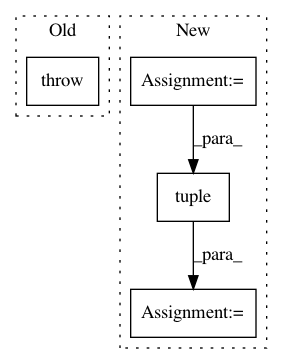

d364facfdecaf5874b85bca3f7f0b2832e3483a2,tests/test_regressor/test_residuals.py,TestPredictionError,test_peplot_shared_limits,#TestPredictionError#,135
Before Change
Test shared limits on the peplot
raise NotImplementedError("not yet implemented")
@pytest.mark.skip(reason="not implemented yet")
def test_peplot_draw_bounds(self):
After Change
Test shared limits on the peplot
visualizer = PredictionError(LinearRegression(), shared_limits=False)
visualizer.fit(self.data.X.train, self.data.y.train)
visualizer.score(self.data.X.test, self.data.y.test)
visualizer.finalize()
xlim = tuple(map(int, visualizer.ax.get_xlim()))
ylim = tuple(map(int, visualizer.ax.get_ylim()))
assert xlim == ylim
@pytest.mark.filterwarnings("ignore:internal gelsd driver lwork query error")
In pattern: SUPERPATTERN
Frequency: 3
Non-data size: 4
Instances
Project Name: DistrictDataLabs/yellowbrick
Commit Name: d364facfdecaf5874b85bca3f7f0b2832e3483a2
Time: 2018-06-18
Author: benjamin@bengfort.com
File Name: tests/test_regressor/test_residuals.py
Class Name: TestPredictionError
Method Name: test_peplot_shared_limits
Project Name: keras-team/keras
Commit Name: 8202e627c7d7897728d824c84a6d479ca84a9098
Time: 2019-03-25
Author: me@taehoonlee.com
File Name: keras/backend/theano_backend.py
Class Name:
Method Name: slice
Project Name: keras-team/keras
Commit Name: 8202e627c7d7897728d824c84a6d479ca84a9098
Time: 2019-03-25
Author: me@taehoonlee.com
File Name: keras/backend/cntk_backend.py
Class Name:
Method Name: slice